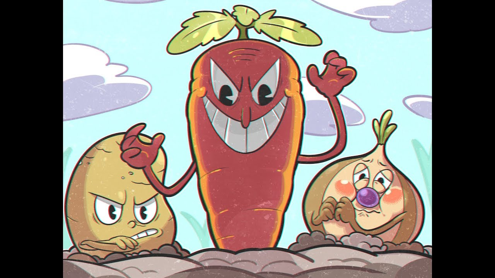

Меню
|
Банда корнеплодов Здесь также как и с Гупи Ле Гранде три фазы, однако боссов здесь три, а не один (по одному на каждую фазу). Боссами являются Сэл Картошка, Олли Луковица и Чонси Шантане. Самым простым из них считается Лук, самым сложным же представлена Морковь. Являются самыми лёгкими боссами в игре. |